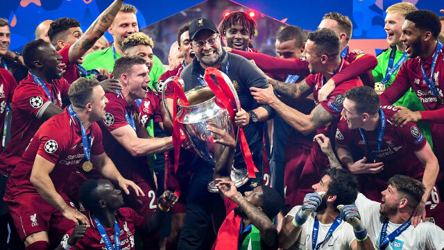

Co to właściwie jest?
Międzynarodowe, europejskie, klubowe rozgrywki piłkarskie, utworzone z inicjatywy UEFA w 1992, jako kontynuacja Pucharu Europy Mistrzów Krajowych (zwanego też Pucharem Europy lub Pucharem Mistrzów) i regularnie prowadzone przez tę organizację od sezonu 1992/1993 w ramach europejskich pucharów. Przeznaczone dla najlepszych męskich drużyn klubowych (zajmujących czołowe miejsca w europejskich ligach krajowych) oraz rozgrywane na europejskich stadionach. Są to najbardziej prestiżowe klubowe zmagania piłkarskie w Europie.
